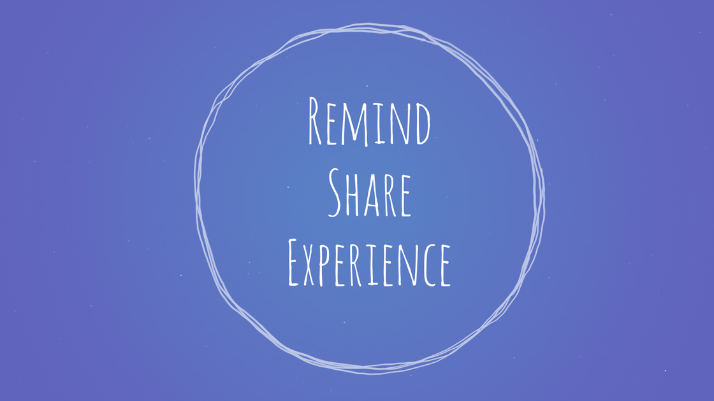
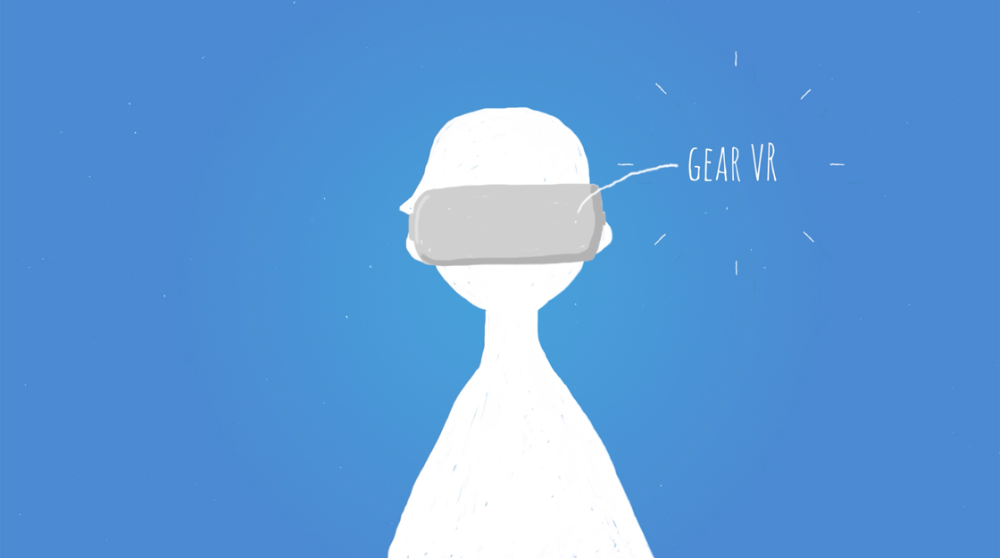
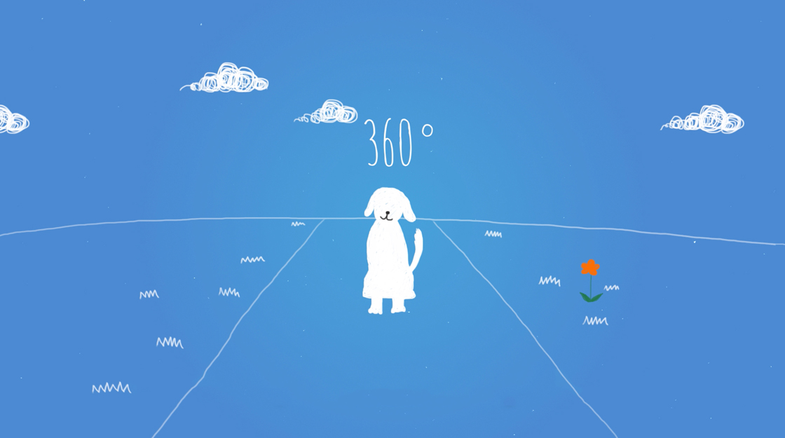
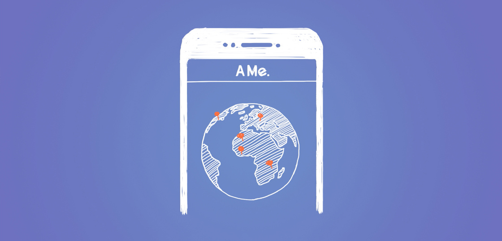
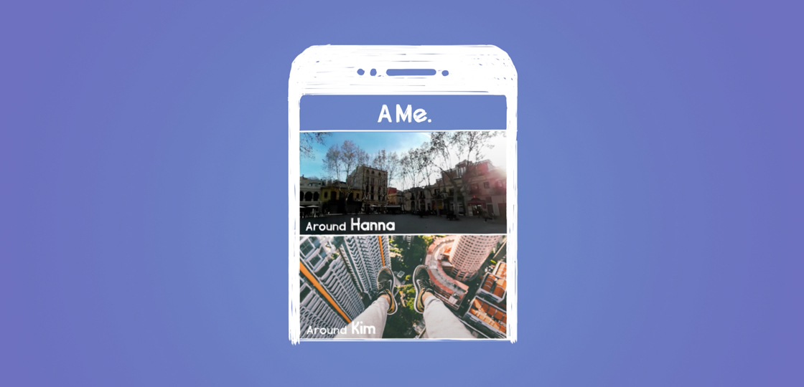

AMe(현 제품명 FITT360)는 삼성전자 C랩 출신 스타트업인 링크플로우에서 제작한 넥밴드형 360° 카메라입니다.
본 프로젝트에서는 AMe의 컨셉 소개 영상을 제작했습니다. UX 컨셉 포인트 세 가지를 제안하고 콘티와 아트웍을 제작했으며, 전체 영상 제작 과정을 감독했습니다. 완성된 영상은 삼성개발자컨퍼런스 2016 전시에 사용되었습니다.
AMe의 제품 컨셉 포인트는 360° 카메라를 웨어러블 형태로 만들어 1인칭 시점으로 영상을 촬영한다는 것입니다. 이렇게 촬영된 영상을 어떤 UX적 관점으로 풀어낼 지가 본 프로젝트의 첫 번째 과제였고, 이에 1) 되새김, 2) 공유, 3) 경험을 AMe의 세 가지 UX 컨셉 포인트로 제시했습니다.
1) AMe로 촬영했던 영상을 VR 기기로 재생하여 그 시점으로 되돌아가는 것이 '되새김' 컨셉, 2) AMe 모바일 앱으로 이전에 촬영했던 영상들을 한 눈에 모아보고 소셜미디어로 쉽게 공유할 수 있는 것이 '공유' 컨셉, 3) 다른 사용자가 AMe로 촬영한 영상을 VR 기기로 재생하여 그 사람의 경험을 간접 체험해보는 것이 '경험' 컨셉입니다.
AMe로 실제 촬영한 영상이 돋보이게 하기 위해, 컨셉 설명을 위한 아트웍은 실사 느낌을 최대한 배제하고 색지 위에 색연필로 그린 듯한 느낌으로 제작했습니다.
   